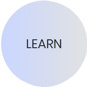
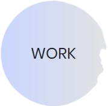
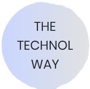

The first and foremost step in the TECHNOL way of life is to learn the best of the Technologies.
Technol has an environment that enables the student to learn about the most in-demand and latest technologies
and platforms in the most practically oriented way possible. We have an experienced teaching team with
a lot of experience in their respective fields. Our project based approach to teaching is one of
its kind and is revolutionizing Teaching in its own way.

There is no use of learning a technology if that can not be put in to use for building something out of it.
The Technol way of learning allows the students to actually do the work hands on through Internship
opportunities. The Technol internships are not like regular internships. Our Interns work on
Company projects and in the process Learn and Build all at the same time. So do not wait up kick off
your career with an Internship with us.

We at TECHNOL believe that the students have immense potential which needs the right kind of environment
to boom to its fullest. Technol provides the students with the Best possible Trainings and then helps
them in implementing their leaning to solve real world problems by getting hands on actual projects
which provides an overall Development to the student. Technol is the best platform for every student to
fully realise his/her potential to the fullest.